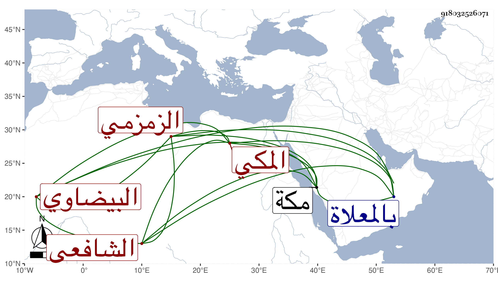

0902Sakhawi.DawLamic.ITO20230111-ara1.EIS1600.918032526071
Biography ID: 918032526071
986
علي بن محمد بن إسماعيل بن علي بن محمد بن داود نور الدين البيضاوي الأصل المكي الزمزمي الشافعي ابن أخي نابت وأبي الفتح ابني إسماعيل والمصاب بإحدى كريمتيه ويعرف كسلفه بالزمزمي . ولد بمكة ونشأ بها وقرأ على عم والده شيخنا البرهان الزمزمي وتدرب بعمه أبي الفتح وبرع في الميقات والفرائض ونحوهما وشارك في الفقه وأصوله العربية وصار المعول عليه هناك في الميقات والروحاني ونحوها بل اشتهر بالحجب عن من يتعبث به الجان وقصد فيه وحكيت عنه في أخبار . وقد لقيته غير مرة في المجاورة الثانية وقصدني بالسلام حين قدومي المرة الثالثة ولم يلبث أن مات في ليلة الثلاثاء سادس ذي الحجة سنة خمس وثمانين ودفن عند سلفه بالمعلاة ولم يخلف في فنونه بعده مثله ، وله في الفرائض والفلك مناظيم منها المشرع الفائض في الفرائض يزيد على ألف بيت وكنز الطلاب في الحساب وكذا تحفة الطلاب ، وأقرأ الطلبة وباشر الأذان رحمه الله وعفا عنه .
